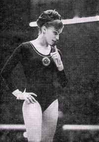

Larissa Petrik (USSR)
1968 Olympic FX Champion

Medal Total
Olympic
Games:
1 Gold, 1 Bronze
World Championships: 1 Gold, 1 Silver, 2 Bronze
European Championships:
1 Bronze
Larissa was born on August 28, 1949 in Dolinsk, Sakhalin Region. Her father was a paratrooper and the family moved frequently in Larissa's childhood. In the late 1950s they moved to Vitebsk (Belasussian SSR) and settled there. Larissa was brought to the gym by her father, who believed thet physical education was vital for good health. She took both gymnastics and dance, but eventually realized that gymnastics was "my fate and destiny." She was coached by Vikenty Dmitriev and won the USSR Championships, beating Latynina, at the age of 15. She moved to Moscow after the Mexico City Games, married Olympic champion Viktor Klimenko on December 30, 1969, and worked as a commentator for Soviet TV after retiring from gymnastics in 1971. The couple have two sons: Victor (b. 1975) and Vladimir (b. 1985).
Competition Results
1964
USSR Championships: 1st AA
1965
European Championships: 4th AA, 3rd B, 5th FX, 6th
UB
USSR Championships: 9th AA
1966
Tiflis Invitational: 2nd AA
USSR Championships: 2nd AA, 1st UB, 2nd B, 3rd FX, 6th V
USSR Cup: 2nd AA
USSR World Trials: 2nd AA
World Championships: 2nd Team, 6th AA, 3rd B,
4th FX
Yerevan Invitational: 1st AA
1967
Pre-Olympics: 3rd AA
USSR Championships: 2nd AA, 2nd B, 3rd V, 4th UB, 6th FX
USSR Spartakiade: 2nd AA
1968
Olympics: 1st Team, 4th AA, 1st FX,
3rd B
USSR Championships: 3rd AA, 2nd V, 2nd FX, 3rd B
USSR Cup: 4th AA
1969
Intl. Elite Women's Competition: 1st AA, 1st V,
1st B, 1st FX
University Games: 1st AA
USSR Championships: 2nd AA
1970
Dinamo Championships: 4th AA, 3rd B
University Games: 1st AA
USSR Championships: 2nd B, 4th UB, 5th FX
USSR Cup: 4th AA
World Championships: 1st Team, 6th AA, 3rd B
1971
USA-USSR Dual Meet: 1st Team, 8th AA
USSR Championships: 8th AA, 6th UB, 6th FX
USSR Cup: 4th AA
This page was created on March 17, 2000
and was last updated on May 10, 2026.
© Gymn Forum